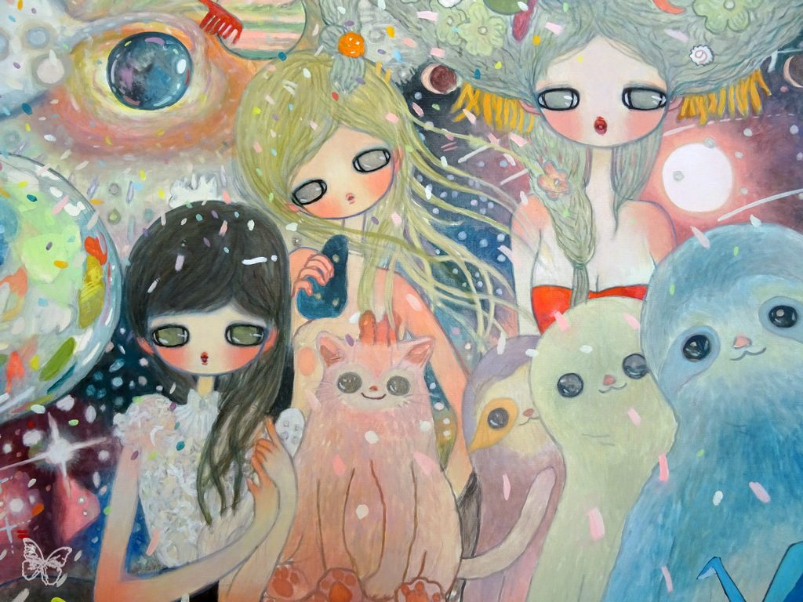
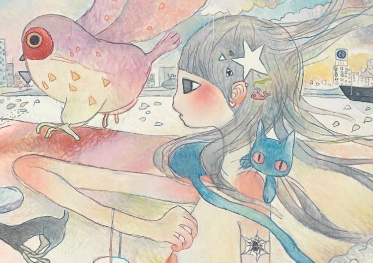
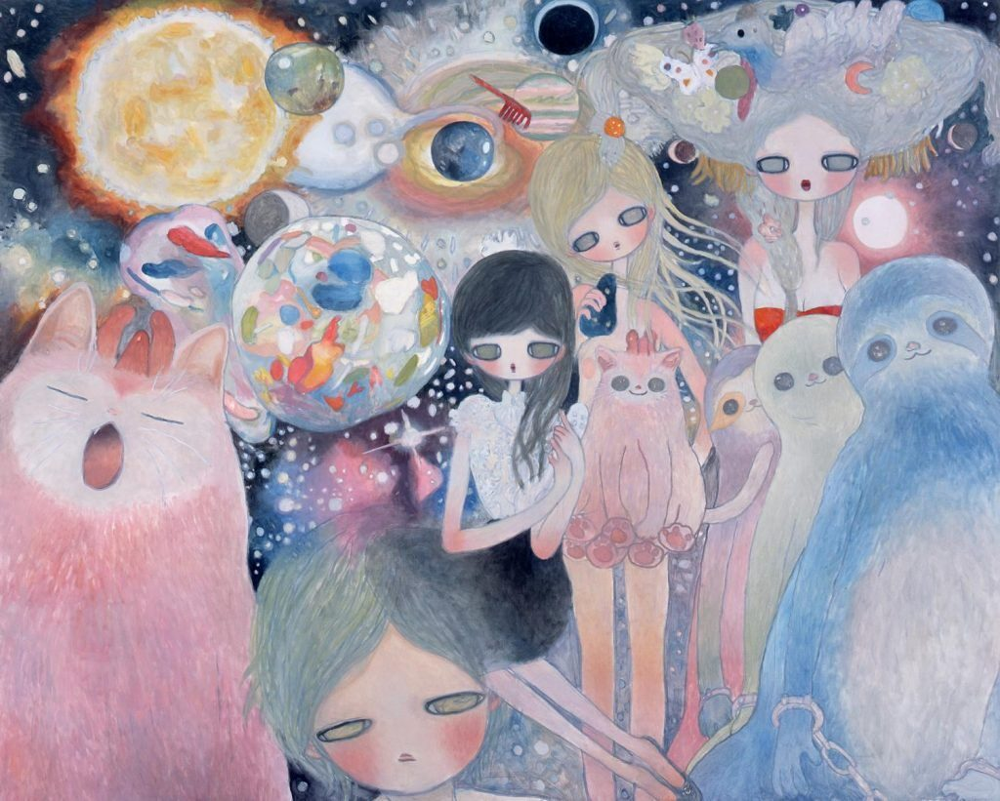
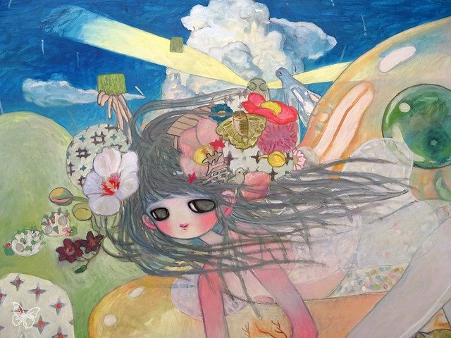

Her Art
style and themes

Her style
The figures
Thin, androgynous people with large eyes and round heads. They usually float instead of standing on the ground.
The settings
Exotic animals and landscapes placed in real cities. Her work sets the future against fantasy.
A female point of view
Otaku culture, the world of manga and anime fans, has mostly been shaped by men. Takano's work shows it from a woman's point of view.
Red joints
Many of her figures have red knees, elbows, and other joints. Takano has said the red marks mean the figures are suspended from adulthood.
A personal mythology
Takano describes her work as a personal mythology.

Gallery


